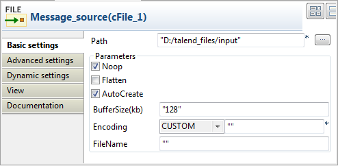
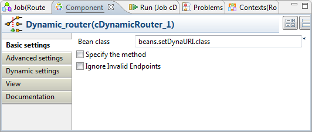
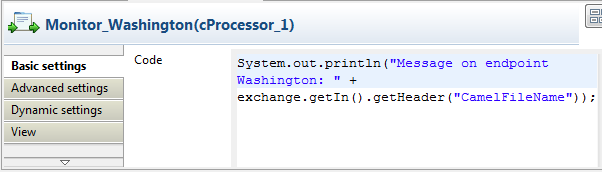

|
Component Family |
Routing | |
|
Function |
cDynamicRouter allows you to route messages while avoiding the dependency of the router on all possible destinations. | |
|
Purpose |
cDynamicRouter is used to route a message or messages to different endpoints on specified conditions. | |
|
Basic settings |
Bean class |
Enter the name of the bean class to be used for the dynamic router. |
|
Specify the method | Select this check box to specify the method to be used which is defined in the bean class. | |
|
Ignore Invalid Endpoints | Select this check box to ignore unresolved endpoint URIs. Clear the check box to throw an exception when endpoint URIs are not valid. | |
|
Usage |
cDynamicRouter is used as a middle or end component in a Route. | |
|
Limitation |
n/a | |
In this scenario, three file messages containing people information are routed to different endpoints according to the city names they contain.
The following is an extract of the example XML files used in this use case:
Message_1.xml:
<person> <firstName>Ellen</firstName> <lastName>Ripley</lastName> <city>Washington</city> </person>
Message_2.xml:
<person> <firstName>Peter</firstName> <lastName>Green</lastName> <city>London</city> </person>
Message_3.xml:
<person> <firstName>Alice</firstName> <lastName>Yang</lastName> <city>Beijing</city> </person>
A predefined Java bean, setDynaURI, is called in this use case to return endpoint URIs according to the city name contained in each message, so that the message containing the city name Washington will be routed to endpoint Washington and so forth.
For more information about creating and using Java Beans, see Talend Open Studio for ESB User Guide.
package beans;
import org.apache.camel.Exchange;
import org.apache.camel.Header;
import org.w3c.dom.Document;
import org.w3c.dom.Element;
import org.w3c.dom.NodeList;
public class setDynaURI {
public String setURI(Document document,
@Header(Exchange.SLIP_ENDPOINT) String previous) {
if(previous!=null){
return null;
}
NodeList cities = document.getDocumentElement().getElementsByTagName(
"city");
Element city = (Element) cities.item(0);
String textContent = city.getTextContent();
return "direct:"+textContent;
}
}
From the Palette, expand the Messaging folder, and drop one cFile and three cMessagingEndpoint components onto the design workspace.
Expand the Routing folder, and drop a cDynamicRouter component onto the design workspace.
Expand the Processor folder, and drop three cProcessor components onto the design workspace.
Label the components for better identification of their respective functionality.
Right-click the cFile component, select Row > Route from the contextual menu and click the cDynamicRouter component.
Repeat this operation to connect the cMessagingEndpoint components to the cProcessor components.
Double-click the input cFile component to display its Basic settings view in the Component tab and set its properties.
In this use case, simply specify the input file path and leave the other parameters as they are.
Double-click the cDynamicRouter component to display its Basic settings view in the Component tab.
In the Bean class field, type in the name of the predefined Java bean. Leave the Specify the method check box unselected as there is only one method in the Java bean and leave the Ignore Invalid Endpoints check box unselected if you want the component to throw an exception when endpoint URIs are not valid.
Double-click the first cMessagingEndpoint component, which is labelled Washington, to display its Basic settings view in the Component tab, and type in the URI in the URI field for the destination of your message.
Here, we want to use this component to retrieve the message routed to the URI direct:Washington, as shown below.

Repeat this step to set the endpoint URIs for the other two cMessagingEndpoint components: direct:London and direct:Beijing respectively.
Double-click the first cProcessor component, which is labelled Monitor_Washington, to display its Basic settings view in the Component tab.
In the Code box, customize the code to display the file name of the message routed to the endpoint Washington on the console.
System.out.println("Message on endpoint Washington: "+ exchange.getIn().getHeader("CamelFileName"));Repeat these steps to configure the other two cProcessor components to display the file names of the messages routed to the endpoints London and Beijing respectively.
Press Ctrl+S to save your Route.
Click the Code tab at the bottom of the design workspace to have a look at the generated code.

As shown in the code, the incoming message
fromthe endpointMessage_sourceis routed by.dynamicRouterto endpoints the URIs of which are dynamically set according tobeans.setDynaURI.class.Click the Run view to display it and click the Run button to launch the execution of your Route.
You can also press F6 to execute it.
RESULT: The source messages are routed to different endpoints based on the city names contained in the messages.